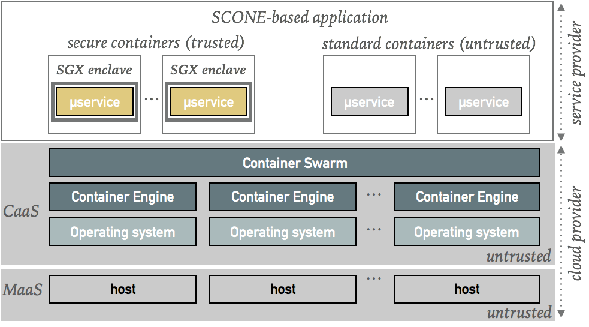

Application-Oriented Security¶
SCONE supports developers and service providers, to protect the confidentiality and integrity of their applications - even when running in environments that cannot be completely trusted. SCONE's focus is on supporting the development of programs running inside of containers like microservice-based applications as well as cloud-native applications. However, SCONE can protect most programs running on top of Linux.

SCONE supports developers and service providers to ensure end-to-end encryption in the sense that data is always encrypted, i.e., while being transmitted, while being at rest and even while being processed. The latter has only recently become possible with the help of a novel CPU extension by Intel (SGX). To reduce the required computing resources, a service provider can decide what to protect and what not to protect. For example, a service that operates only on encrypted data might not need to be protected with SGX.
Keep it simple
Our general recommendation is, however, that developers should protect all parts of an application. The cost of computing resources have been dropping dramatically and hence, the reduction in cost might not be justified when compared with the potential costs - and also loss of reputation - by data breaches. SCONE supports horizontal scalability, i.e., throughput and latency can typically be controlled via the number of instances of a service.*
Ease of Use¶
SCONE supports strong application-oriented security with a workflow like Docker, i.e., SCONE supports Dockerfiles as well as extended Docker compose files. This simplifies the construction and operation of applications consisting of a set of containers. This fits, in particular, modern cloud-native applications consisting of microservices and each microservice runs either in a standard or a secure container.
The Docker Engine itself is not protected. The Docker Engine, like the operating system, never sees any plain text data. This facilitates that the Docker Engine or the Docker Swarm can be managed by a cloud provider. SCONE helps a service providers to ensure the confidentiality and integrity of the application data while the cloud provider will ensure the availability of the service. For example, with the help of Docker Swarm, failed containers will automatically be restarted on an appropriate host.
© scontain.com, March 2018. Questions or Suggestions?